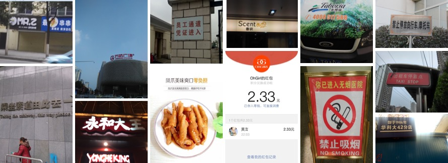

开源数据集¶
- 优先考虑数据，模型只能无限拟合数据的上限
通用中英文OCR数据集¶
这里整理了常用中文数据集，持续更新中，欢迎各位小伙伴贡献数据集～ - ICDAR2019-LSVT - ICDAR2017-RCTW-17 - 中文街景文字识别 - 中文文档文字识别 - ICDAR2019-ArT
1、ICDAR2019-LSVT¶
- 数据来源：https://ai.baidu.com/broad/introduction?dataset=lsvt
- 数据简介： 共45w中文街景图像，包含5w（2w测试+3w训练）全标注数据（文本坐标+文本内容），40w弱标注数据（仅文本内容），如下图所示：
(a) 全标注数据
(b) 弱标注数据 - 下载地址：https://ai.baidu.com/broad/download?dataset=lsvt
- 说明：其中，test数据集的label目前没有开源，如要评估结果，可以去官网提交：https://rrc.cvc.uab.es/?ch=16
2、ICDAR2017-RCTW-17¶
- 数据来源：https://rctw.vlrlab.net/
- 数据简介：共包含12,000+图像，大部分图片是通过手机摄像头在野外采集的。有些是截图。这些图片展示了各种各样的场景，包括街景、海报、菜单、室内场景和手机应用程序的截图。 
- 下载地址：https://rctw.vlrlab.net/dataset/
3、中文街景文字识别¶
- 数据来源：https://aistudio.baidu.com/aistudio/competition/detail/8
- 数据简介：ICDAR2019-LSVT行识别任务，共包括29万张图片，其中21万张图片作为训练集（带标注），8万张作为测试集（无标注）。数据集采自中国街景，并由街景图片中的文字行区域（例如店铺标牌、地标等等）截取出来而形成。所有图像都经过一些预处理，将文字区域利用仿射变化，等比映射为一张高为48像素的图片，如图所示：

(a) 标注：魅派集成吊顶
(b) 标注：母婴用品连锁 - 下载地址 https://aistudio.baidu.com/aistudio/datasetdetail/8429
4、中文文档文字识别¶
- 数据来源：https://github.com/YCG09/chinese_ocr
- 数据简介：
- 共约364万张图片，按照99:1划分成训练集和验证集。
- 数据利用中文语料库（新闻 + 文言文），通过字体、大小、灰度、模糊、透视、拉伸等变化随机生成
- 包含汉字、英文字母、数字和标点共5990个字符（字符集合：https://github.com/YCG09/chinese_ocr/blob/master/train/char_std_5990.txt ）
- 每个样本固定10个字符，字符随机截取自语料库中的句子
- 图片分辨率统一为280x32
- 下载地址：https://pan.baidu.com/s/1QkI7kjah8SPHwOQ40rS1Pw (密码：lu7m)
5、ICDAR2019-ArT¶
- 数据来源：https://ai.baidu.com/broad/introduction?dataset=art
- 数据简介：共包含10,166张图像，训练集5603图，测试集4563图。由Total-Text、SCUT-CTW1500、Baidu Curved Scene Text (ICDAR2019-LSVT部分弯曲数据) 三部分组成，包含水平、多方向和弯曲等多种形状的文本。
- 下载地址：https://ai.baidu.com/broad/download?dataset=art
数据合成¶
- text_renderer
- SynthText
- SynthText_Chinese_version
- TextRecognitionDataGenerator
- SynthText3D
- UnrealText
- SynthTIGER